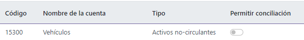
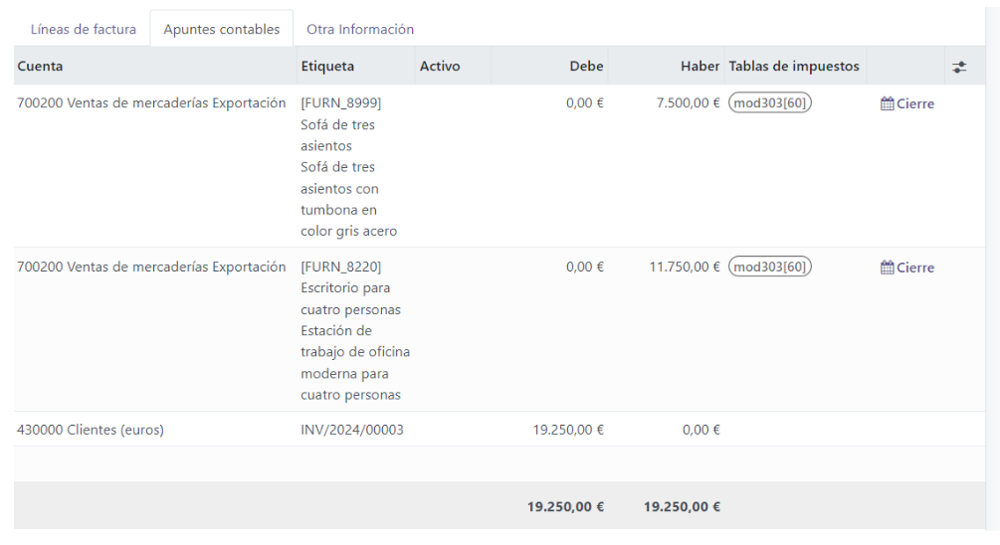
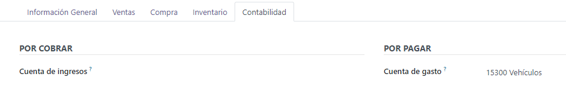
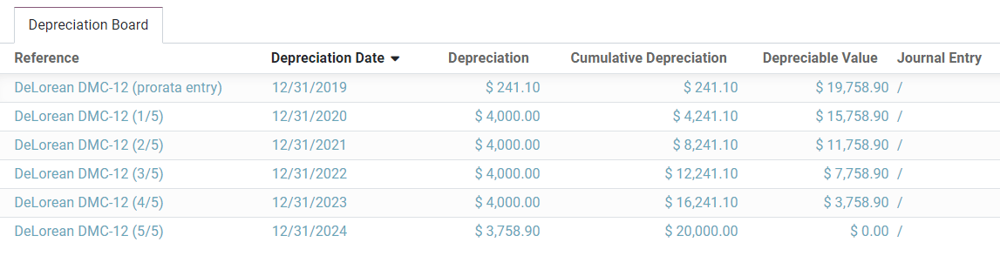
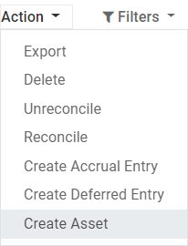

Activos no circulantes y fijos¶
Los activos no circulantes, también conocidos como activos a largo plazo, son inversiones que se esperan realizar después de un año. Se capitalizan en lugar de gastarse y aparecen en el balance general de la empresa. Dependiendo de su naturaleza, pueden sufrir una depreciación.
Los activos fijos son un tipo de activos no circulantes e incluyen los bienes adquiridos por sus aspectos productivos, como edificios, vehículos, equipos, terrenos y software.
Por ejemplo, supongamos que compramos un auto por $27,000. Planeamos amortizarlo a lo largo de cinco años, y después lo venderemos por $7,000. Utilizando el método de depreciación lineal, se cargan $4,000 cada año como gastos de depreciación. Después de cinco años, el importe de la depreciación acumulada que figura en el balance es de $20,000 dólares, lo que nos deja un total de $7,000 de valor no depreciable, o valor de salvamento.
La aplicación Contabilidad de Odoo gestiona la depreciación mediante la creación de todos los asientos de depreciación automáticamente en modo de borrador. Luego se contabilizan de forma periódica.
Odoo admite los siguientes métodos de depreciación:
Línea recta
En declive
Declive y luego línea recta
Nota
El servidor comprueba una vez al día si se debe publicar un asiento. Pueden pasar hasta 24 horas antes de que se refleje el cambio de borrador a registrado.
Prerrequisitos¶
Se deben contabilizar estas operaciones en una cuenta de activos y no en la cuenta de gastos predeterminada.
Configurar una cuenta de activos¶
Para configurar su cuenta en el Plan de cuentas, vaya a , haga clic en Crear, y llene el formulario.
Nota
El tipo de esta cuenta debe ser Activo fijo o Activo no circulante.
Contabilizar un gasto en la cuenta correcta¶
Seleccionar la cuenta en un borrador de factura¶
En un borrador de factura, seleccione la cuenta correcta para todos los activos que está comprando.
Elija una cuenta de gastos diferente para productos específicos¶
Comience a editar el producto, vaya a la pestaña de Contabilidad, seleccione la Cuenta de gastos correcta y guarde.
Truco
Es posible automatizar la creación de asientos de activos para estos productos.
Modificar la cuenta de un apunte contable registrado¶
Para hacer esto, abra su diario de compras en , seleccione el apunte contable que desea modificar, haga clic en la cuenta y seleccione la correcta.

Asientos contables de activos¶
Crear un nuevo asiento¶
Un asiento contable de activo genera automáticamente todos los asientos en modo de borrador. Después se contabilizan uno por uno en su debido momento.
Para crear un nuevo asiento, vaya a , haga clic en Crear y complete el formulario.
Haga clic en seleccionar compras relacionadas para vincular un apunte contable existente a este nuevo asiento. Algunos campos se completarán de forma automática y el apunte contable aparecerá en la pestaña compras relacionadas.

Una vez hecho esto, puede hacer clic en Calcular depreciación (al lado del botón Confirmar) para generar todos los valores de la tabla de depreciación. Esta tabla le muestra todos los asientos que Odoo registrará para depreciar su activo, y la fecha.
¿Qué significa «Prorata Temporis»?¶
La función Prorata Temporis es útil para depreciar sus activos con la mayor precisión posible.
Con esta función, el primer asiento en la tabla de depreciación se calcula en función del tiempo que queda entre la fecha de prorrateo y la fecha de primera depreciación, y no en función del tiempo predeterminado entre depreciaciones.
Por ejemplo, la tabla de depreciación anterior tiene su primera depreciación con un importe de $241.10 en lugar de $4,000.00. Por lo tanto, el último asiento también es menor y tiene un importe de $3,758.90.
¿Cuáles son los diferentes métodos de depreciación?¶
El método de depreciación en línea recta divide el valor depreciable inicial entre el número de depreciaciones planeadas. Todos los asientos de depreciación tienen el mismo importe.
El Método de depreciación en declive multiplica el valor depreciable por el factor en declive para cada asiento. Cada asiento de depreciación tiene un importe inferior al del asiento anterior. El último asiento de depreciación no utiliza el factor en declive, sino que tiene un importe correspondiente al balance del valor depreciable de modo que llegue a $0 al final de la duración indicada.
El Método de depreciación en declive y luego en línea recta utiliza el método en declive, pero con una depreciación mínima igual a la del método de línea recta. Este método asegura una depreciación rápida al principio, seguida de una constante después.
Activos del diario de compras¶
Puede crear un asiento de activo desde un apunte específico en su diario de compras.
Para hacerlo, abra su diario de compras en , y seleccione el apunte contable que desea registrar como activo. Asegúrese de que se registre en la cuenta correcta (vea: Modificar la cuenta de un apunte contable registrado).
Posteriormente, haga clic en Acción, seleccione Crear activo, y complete el formulario de la misma manera que lo haría para crear un nuevo asiento.
Modificación de un activo¶
Puede modificar los valores de un activo para aumentar o disminuir su valor.
Para hacerlo, abra el activo que desea modificar y haga clic en Modificar depreciación. A continuación, complete el formulario con los nuevos valores de depreciación y haga clic en Modificar.
Una disminución de valor registra un nuevo asiento para la disminución de valor y modifica todos los asientos futuros no registrados que aparecen en el tablero de depreciación.
Para un aumento de valor es necesario completar campos adicionales relacionados con los movimientos de la cuenta, además de crear un nuevo asiento de activo con el aumento de valor. Se puede acceder al asiento de activo con aumento de valor a través de un botón inteligente.

Eliminar activos fijos¶
Vender un activo o eliminarlo implica que se debe retirar del balance general.
Para ello, abra el activo del que desea deshacerse, haga clic en Vender o eliminar y complete el formulario.

La contabilidad de Odoo genera entonces todos los asientos necesarios para deshacerse del activo, incluyendo la ganancia o pérdida en la venta, que se basa en la diferencia entre el valor contable del activo en el momento de la venta y el importe en el que se vende.
Nota
Para registrar la venta de un activo, primero debe registrar la factura de cliente relacionada para poder vincularla con la venta del activo.
Modelos de activos¶
Puede crear Modelos de activos para crear los asientos de activos de forma más rápida. Esto resulta especialmente útil si compra de forma recurrente el mismo tipo de activos.
Para crear un modelo, vaya a , haga clic en Crear, y complete el formulario de la misma manera que lo haría para crear un nuevo asiento.
Truco
También puede convertir un asiento confirmado de activo en un modelo abriéndolo desde y luego, haciendo clic en el botón Guardar modelo.
Aplicar un modelo de activos a un nuevo asiento¶
Cuando cree un nuevo asiento de activo, complete la Cuenta de activo fijo con la cuenta de activo correcta.
En la parte superior del formulario aparecen nuevos botones con todos los modelos vinculados a esa cuenta. Al hacer clic en un modelo, se completa el formulario según dicho modelo

Automatizar activos¶
Cuando se crea o edita una cuenta cuyo tipo es activo no corriente o activo fijo, se puede configurar para que se creen activos correspondientes a los gastos que se abonan en dicha cuenta de forma automática.
Hay tres opciones para el campo automatizar activos:
No: es el valor predeterminado. No pasa nada.
Crear en borrador: cuando se registra una transacción en la cuenta se crea un borrador de asiento de activo, pero no se valida. Usted debe completar el formulario correspondiente en .
Crear y validar: también debe seleccionar un modelo de activos (ver: Modelos de activos). Cada vez que se registra una operación en la cuenta, se crea un asiento de activo que se valida inmediatamente.
Truco
Puede, por ejemplo, seleccionar esta cuenta como la cuenta de gastos predeterminada de un producto para automatizar totalmente su compra. (ver: Elija una cuenta de gastos diferente para productos específicos).
Ver también